60 alternativas evaluadas una por una. Cuáles conviene hacer ya, cuáles después y cuáles nunca, con la plata a 6, 12 y 36 meses, las horas que te piden y el paso a paso para arrancar.
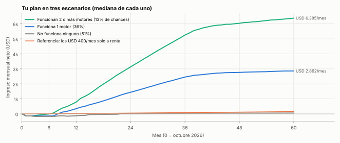
Uso privado. Todas las cifras son estimaciones con fuentes fechadas; no es asesoramiento financiero regulado.
Se generan desde el repositorio (oportunidades/catalogo.yaml) y se pueden recalcular.
Revisé 60 alternativas: 24 salen de lo que me contaste (convertidas en alternativas concretas) y el resto son nuevas. Las medí con los mismos criterios: plata, horas tuyas, chances, qué tan divertida y a tu medida es, si hay que vender cara a cara y cuánto puede hacer la IA.
Hacé dos cosas, automatizá una y comprá una.
Lo que da el plan (simulado 10.000 veces): hay 49% de chances de que al menos uno de los motores funcione. Si funciona uno, el plan deja en el escenario normal USD 347/mes al año 1, USD 1.442 al año 2 y USD 2.457 al año 3. Si no funciona ninguno, en 3 años perdés −USD 3.494 (herramientas y la app comprada) y te quedan lo aprendido y la renta. Todo con 7–10 horas por semana.
Dos motores al mismo tiempo como máximo, con una decisión escrita en cada hito. Si algo no funciona, se corta a tiempo y esas horas pasan a lo siguiente.
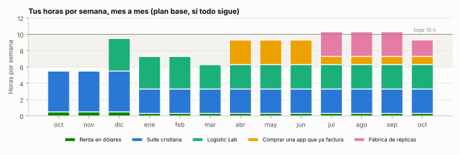
| Hito | Qué miramos | Qué decidimos |
|---|---|---|
| Mes 3 | ¿La suite está publicada? ¿Cuántos la usan a la semana? | Seguir, o ajustar la difusión |
| Mes 6 | Suite: ≥ 1.000 usuarios por semana y ≥ 10% que vuelve. Logistic Lab: 5 calculadoras online | Suite: seguir, o congelar y pasar a la próxima app del radar. Compra: ¿hay una app que pase los criterios? |
| Mes 9 | Logistic Lab: ≥ 500 usuarios por mes o una cátedra usándola | Seguir, o dejar solo lo gratis |
| Mes 12 | Todo contra todo, y contra la renta | Qué se acelera en el año 2 (más apps, cátedras, compra más grande) |
/comite): plata, horas y reglas de corte.Una app o un software no dan "un poco" de plata con seguridad: o funcionan y crecen, o no funcionan. Por eso el plan no se resume en un solo número, sino en tres escenarios con sus chances.
| Escenario | Chances | Mes 6 | Mes 12 | Mes 24 | Mes 36 | Mes 60 | Plata acumulada a 3 años |
|---|---|---|---|---|---|---|---|
| No funciona ninguno | 51% | −USD 167 | −USD 127 | USD 11 | USD 38 | USD 54 | −USD 3.494 |
| Funciona 1 motor | 36% | −USD 140 | USD 347 | USD 1.442 | USD 2.457 | USD 2.862 | USD 32.931 |
| Funcionan 2 o más | 13% | −USD 4 | USD 787 | USD 3.135 | USD 5.256 | USD 6.385 | USD 76.992 |
| Referencia: todo a renta | — | USD 11 | USD 24 | USD 53 | USD 83 | USD 150 | — |
Cuidado con los números. Las chances de cada motor son estimaciones propias con datos de mercado de 2026, no promesas. El modelo ya supone que a veces fallan todos juntos (por ejemplo, porque faltan tiempo o energía). Los hitos de los meses 3, 6 y 9 existen para corregir rápido con datos reales.
| Palanca | Qué cambia | Costo |
|---|---|---|
| Turbo (entrenar IA) | Ingreso desde el mes 1; cubre las herramientas | +3 h/semana |
| Claude Max 20x durante los sprints de construcción | Dobla la capacidad de Claude en los meses 1–3 | +USD 100/mes solo en esos meses |
| Más horas (12–15 h/semana) | Adelanta el motor 2 y la segunda ola | Tu tiempo |
| Empleo remoto en dólares | El salto más grande de ingreso, sin horas extra | Entrevistas |
| Poner USD 1.000–2.000 en publicidad para la suite (solo en EE.UU. hispano) | Acelera usuarios si la retención ya es buena | Solo después del mes 6 y con números |
Cada alternativa tiene los mismos números: cuánto hay que poner, cuántas horas pide, cuándo entra el primer dólar, las chances de que funcione y cuánto deja por mes a los 6, 12 y 36 meses (si funciona normal, muy bien, o si no funciona y se corta). Con eso se calcula un puntaje de 0 a 100 con los criterios que pediste:
| Criterio | Peso | Qué mide |
|---|---|---|
| Plata si sale bien | 20% | Ingreso mensual a 3 años en el escenario normal |
| Pocas horas tuyas | 15% | Horas por semana (pesa más el régimen que el arranque) |
| Chances de que salga | 15% | Probabilidad estimada de que funcione |
| Divertido y a tu medida | 15% | Te divierte, usa tus redes, tu conocimiento y respeta el anonimato |
| Sin vender cara a cara | 10% | La demanda llega sola o la trae una plataforma |
| Lo hace la IA | 10% | Qué parte del trabajo puede hacer Claude |
| Plata rápido | 10% | Meses hasta el primer ingreso |
| Poca inversión | 5% | Plata que hay que poner al inicio |
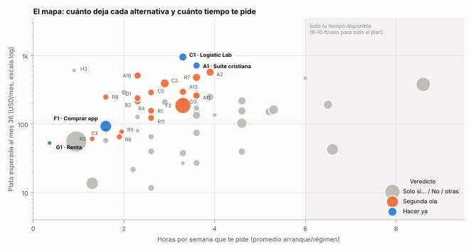
Cada punto es una alternativa; el tamaño indica la inversión inicial. Arriba a la izquierda está lo mejor: mucha plata con pocas horas. La franja gris marca tu presupuesto total de horas: por eso no se pueden hacer todas las buenas a la vez.
| # | ID | Alternativa | Veredicto | Puntaje | h/sem | Inversión USD | Chances | Si funciona: USD/mes al mes 36 | Promedio ponderado por chances, mes 36 |
|---|---|---|---|---|---|---|---|---|---|
| 1 | A1 | Suite cristiana | Hacer ya | 81 | 3.6 | 150 | 30% | 2.236 | 717 |
| 2 | F1 | Comprar una app que ya factura Nueva | Hacer ya | 78 | 1.6 | 2.000 | 65% | 136 | 93 |
| 3 | F2 | Micro-negocio digital Nueva | Segunda ola | 77 | 3.3 | 8.000 | 61% | 296 | 187 |
| 4 | A10 | Radar de nichos + fábrica de apps | Segunda ola | 76 | 2.3 | 150 | 20% | 2.379 | 512 |
| 5 | C1 | Logistic Lab | Hacer ya | 75 | 3.3 | 300 | 25% | 3.624 | 954 |
| 6 | A2 | Juego tycoon de logística | Segunda ola | 74 | 3.9 | 300 | 12% | 4.051 | 573 |
| 7 | G1 | Renta en dólares Nueva | Hacer ya | 74 | 0.4 | 0 | 85% | 61 | 53 |
| 8 | C3 | Plantillas logísticas Nueva | Segunda ola | 73 | 1.6 | 50 | 15% | 532 | 81 |
| 9 | D1 | Comparador y ofertas reales | Segunda ola | 73 | 2.3 | 100 | 15% | 1.602 | 240 |
| 10 | A13 | Localizar apps exitosas Nueva | Segunda ola | 72 | 3.3 | 150 | 15% | 1.953 | 296 |
| 11 | B2 | Asistente de comex y logística Nueva | Segunda ola | 72 | 2.3 | 100 | 12% | 1.682 | 215 |
| 12 | C4 | Herramientas para agentes Nueva | Solo si… | 72 | 2.0 | 50 | 25% | 1.119 | 291 |
| 13 | H3 | Empleo remoto en USD Nueva | Palanca aparte | 72 | 0.9 | 0 | 30% | 1.948 | 610 |
| 14 | A11 | Tutor IA para estudiantes Nueva | Segunda ola | 71 | 3.6 | 150 | 12% | 1.958 | 261 |
| 15 | C5 | Extensión de nicho Nueva | Segunda ola | 71 | 2.6 | 100 | 10% | 2.556 | 290 |
| 16 | D7 | Calculadoras argentinas Nueva | Solo si… | 70 | 1.6 | 50 | 10% | 910 | 106 |
| 17 | D8 | Bot de alertas Nueva | Solo si… | 69 | 1.6 | 50 | 8% | 738 | 58 |
| 18 | C2 | Juego de supply chain para cátedras Nueva | Segunda ola | 68 | 2.9 | 500 | 15% | 2.669 | 394 |
| 19 | A3 | Trivia general | No | 67 | 3.6 | 150 | 7% | 1.992 | 152 |
| 20 | B1 | Asistente de trámites ARCA Nueva | Solo si… | 67 | 3.6 | 150 | 10% | 2.297 | 278 |
| 21 | D3 | Afiliados con contenido anónimo Nueva | Segunda ola | 67 | 3.3 | 50 | 15% | 1.451 | 229 |
| 22 | H1 | Entrenar IA (turbo) | Hacer ya | 67 | 3.0 | 0 | 55% | 197 | 108 |
| 23 | G2 | Motos con operador Nueva | Solo si… | 66 | 1.3 | 2.500 | 70% | 17 | 14 |
| 24 | D5 | Videos cortos anónimos Nueva | Solo si… | 65 | 2.3 | 0 | 10% | 716 | 80 |
| 25 | H2 | Freelance remoto Nueva | Solo si… | 65 | 6.0 | 0 | 35% | 1.308 | 468 |
| 26 | A12 | Prode entre amigos Nueva | Solo si… | 64 | 2.6 | 100 | 8% | 1.371 | 134 |
| 27 | D6 | Newsletter de logística Nueva | Solo si… | 64 | 2.3 | 20 | 10% | 1.227 | 127 |
| 28 | A4 | Diseño de interiores IA | No | 62 | 3.6 | 300 | 6% | 2.216 | 134 |
| 29 | D4 | Canal de música IA | No | 62 | 2.6 | 50 | 6% | 1.015 | 66 |
| 30 | I1 | Curso en la universidad | Solo si… | 62 | 4.0 | 0 | 40% | 332 | 136 |
| 31 | A5 | Lector de PDF en voz alta | No | 61 | 2.6 | 100 | 5% | 808 | 40 |
| 32 | C6 | Simulador completo de entrada | No | 60 | 6.5 | 600 | 5% | 3.296 | 192 |
| 33 | D2 | Comparador universal | Solo si… | 60 | 5.2 | 300 | 5% | 3.063 | 152 |
| 34 | I2 | Curso online anónimo Nueva | No | 60 | 2.2 | 50 | 8% | 238 | 22 |
| 35 | B3 | Atención automática WhatsApp | No | 59 | 4.6 | 300 | 7% | 3.027 | 219 |
| 36 | B4 | Chatbot genérico | No | 59 | 2.6 | 100 | 2% | 567 | 12 |
| 37 | E2 | Tienda con proveedor que despacha Nueva | No | 59 | 5.3 | 800 | 10% | 1.509 | 162 |
| 38 | G3 | Cocheras Nueva | No | 59 | 0.9 | 25.000 | 80% | 64 | 56 |
| 39 | A8 | Buscador de alquileres | Solo si… | 58 | 4.6 | 300 | 6% | 2.311 | 156 |
| 40 | E4 | Impresión a pedido Nueva | No | 58 | 3.3 | 150 | 6% | 560 | 38 |
| 41 | A9 | App para camioneros | Solo si… | 57 | 3.6 | 200 | 6% | 1.202 | 75 |
| 42 | E1 | Marca de hogar y mate | No | 57 | 8.6 | 5.000 | 12% | 3.132 | 380 |
| 43 | A7 | Organización diaria | No | 55 | 3.6 | 100 | 3% | 849 | 27 |
| 44 | A6 | Gestión de proyectos | No | 51 | 4.6 | 150 | 3% | 1.155 | 40 |
| 45 | E3 | Reventa de importados Nueva | No | 50 | 6.6 | 2.000 | 8% | 486 | 43 |
"Si funciona" es el escenario normal cuando la alternativa funciona. "Promedio ponderado por chances" mezcla lo que pasa si funciona y si no, según sus probabilidades. El puntaje no es todo: el veredicto también mira cómo combinan entre sí y tus horas. Por ejemplo, el juego de logística tiene buen puntaje pero va en segunda ola porque no entra en las horas de este año.
Muchas de las alternativas son apps o juegos con publicidad. Estas ocho reglas explican por qué recomiendo unas y descarto otras.
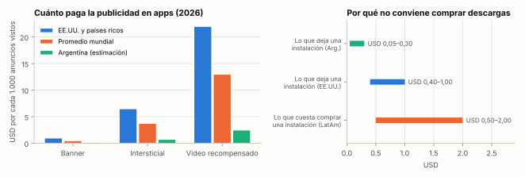
Cada ficha tiene lo mismo, en el mismo lugar: qué es, quién vende por vos, los números clave, la plata en tres escenarios, quién hace qué, qué necesitamos, los riesgos, las primeras 26 semanas y la regla para cortar a tiempo. El orden es el del plan: primero lo que arranca ya.
Una app Android para la comunidad cristiana hispana: trivia bíblica por niveles y desafíos entre amigos, versículo del día en la pantalla de inicio, estudio con IA y agenda de eventos (en línea y presenciales) que cargan los organizadores.
Quién vende por vos: Tu comunidad la comparte en grupos de iglesias y jóvenes; después, la búsqueda del Play Store.
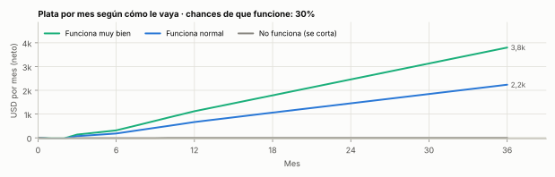
Plataforma web que crece por módulos: dimensionar un depósito, costo por pallet y por pedido, picking y personal, equipos, costo por kilómetro, tarifa de distribución, punto de equilibrio, flujo de fondos y oportunidades de mejora a partir de tus propios datos. Después, simulación 2D y 3D.
Quién vende por vos: Búsquedas de profesionales y estudiantes, una página de marca anónima en LinkedIn y cátedras de tu red que la usan en clase.
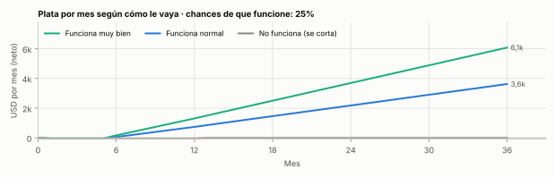
Cada mes, la parte del aporte que no tiene mejor destino compra un tramo de una escalera de instrumentos en dólares. Es lo único 100% pasivo.
Quién vende por vos: Nadie: el mercado paga intereses.
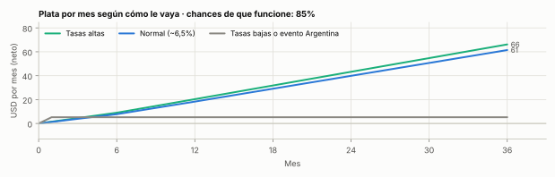
Comprar en Flippa una app o juego Android con ingresos de AdMob verificados (USD 50–150/mes) por USD 1.000–2.500 y mejorarla con IA: actualizaciones, ficha del Play Store y formatos de anuncio.
Quién vende por vos: Los usuarios ya la encuentran en el Play Store.
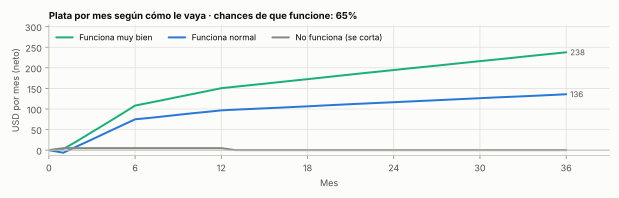
Tareas pagas en dólares evaluando y escribiendo respuestas para entrenar modelos de IA, con horario libre y sin mostrar la cara. Es la versión que sí paga de 'ganar plata con tareas en internet'.
Quién vende por vos: La plataforma te asigna el trabajo: no hay clientes que conseguir.
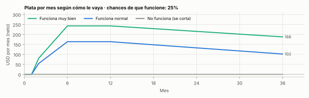
Claude recorre el Play Store buscando apps con muchas descargas y mala puntuación (quejas repetidas) y nichos con demanda sin buena oferta. Cada trimestre se lanza una app que resuelve mejor esa queja, en inglés y español.
Quién vende por vos: La búsqueda del Play Store; las reseñas malas de la competencia dicen qué construir.
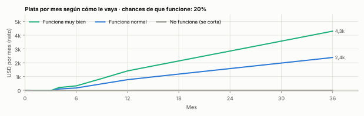
Juego para celular donde armás una empresa de logística (depósitos, camiones, rutas) y aprendés conceptos reales sin que se note. Para el mercado global, en inglés y español.
Quién vende por vos: La búsqueda del Play Store y las recomendaciones; el mercado global paga más por publicidad.
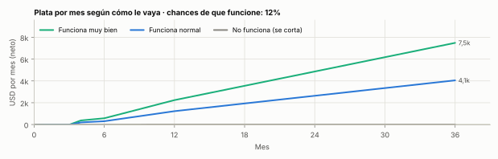
Web + canal de WhatsApp/Telegram que compara el costo total real de electrodomésticos entre tiendas (contado vs cuotas con la inflación del mes, envío, plazo de entrega, garantía) y avisa cuándo una oferta es real según el historial.
Quién vende por vos: La gente llega buscando dónde conviene comprar y comparte las ofertas; las tiendas pagan comisión cuando compran.
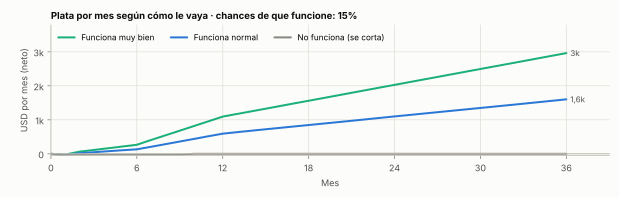
Cada tarjeta muestra el veredicto, los números clave y, cuando la idea original no conviene, la mejor versión que sí podría. Las marcadas "De tu lista" salen de lo que me contaste.
Detectar apps útiles con éxito en inglés sin buena versión en español y hacer la versión latinoamericana.
Por qué: Buena idea, pero es una de las salidas naturales del radar (A10), no un proyecto aparte.
Mejor versión: Incluida en A10.
Subís apuntes o PDFs de una materia; la app los convierte en resúmenes para escuchar en el viaje y en preguntas tipo examen.
Por qué: Buena llegada por la universidad, pero ChatGPT y NotebookLM ya hacen parte gratis; el valor está en bancos de preguntas por materia.
Mejor versión: Empezar por 3 materias de ingeniería con banco de preguntas propio.
Juego de preguntas sobre temas interesantes para los 2 h diarios de viaje del AMBA.
Por qué: Preguntados (Etermax) tiene 800 M de descargas y cinco editores concentran 64% del mercado; sin nicho ni comunidad es difícil destacar.
Mejor versión: Trivia de nicho con comunidad propia: la bíblica (A1) o la de estudio (A11).
Pronósticos de partidos entre grupos de amigos, con ranking y chicanas.
Por qué: El fútbol es lo más buscado del país, pero los medios grandes ya ofrecen prodes y el uso es por temporadas.
Mejor versión: Solo atado a un torneo concreto y como experimento de fin de semana.
Sacás una foto a un ambiente y la IA propone cómo decorarlo.
Por qué: Hay decenas de apps casi iguales (USD 13–49/mes); se crece comprando publicidad y cada imagen cuesta API.
Mejor versión: La misma idea aplicada a tu nicho: diseñar el layout de un depósito (dentro de Logistic Lab, C1).
Cargás un PDF y te lo lee mientras viajás.
Por qué: Android, Chrome y Apple Books ya leen en voz alta gratis; Speechify domina el pago.
Mejor versión: Apuntes → audio → preguntas de examen para estudiantes (A11).
Junta avisos de todos los portales y permite que un inquilino avise que deja el departamento para que el siguiente lo tome antes.
Por qué: Desde el DNU 70/2023 la oferta en CABA creció 80–120% (buscar ya no es tan angustiante); Zonaprop tiene alertas propias; juntar portales choca con sus términos de uso y es un mercado de dos lados.
Mejor versión: Solo si aparece un nicho con dolor fuerte (estudiantes del interior que llegan a CABA) y un socio inmobiliario.
Entretenimiento y herramientas para las horas de espera: costos por viaje, estadías, documentos.
Por qué: El 90% de los camiones ya llega con turno a los puertos del Gran Rosario (STOP 5.0); la publicidad a este público paga poco; lo valioso es B2B y eso requiere vender.
Mejor versión: Calculadora gratuita de costos y estadías dentro de Logistic Lab (C1), como puerta de entrada.
Agenda, hábitos y listas del día.
Por qué: Categoría saturadísima y con alternativas gratuitas integradas al teléfono.
Mejor versión: Versículo diario + plan de lectura dentro de la suite cristiana (A1): mismo hábito, nicho con comunidad.
Tareas, tableros y plazos sincronizados entre computadora y celular.
Por qué: Notion, Trello, Todoist y Google Tasks son gratis y excelentes; en productividad la publicidad espanta usuarios.
Mejor versión: Plantillas de gestión para un nicho (obras, mudanzas, depósitos) dentro de C3.
Respuestas rápidas y cálculos: cuánto cuesta traer algo, qué régimen conviene, qué cambió en la norma.
Por qué: Usa tu conocimiento y el radar regulatorio del sistema; mejor como módulo de C1 que como app aparte.
Mejor versión: Módulo 'Pregúntale a Logistic Lab' dentro de C1.
Explica en simple qué hacer con ARCA, monotributo y facturación, con pasos y enlaces oficiales.
Por qué: Mucha demanda, pero un error impositivo daña a alguien; compiten contadores con IA y los propios buscadores.
Mejor versión: Solo con un contador que revise y se haga responsable.
Un agente que responde consultas de clientes de tiendas online y deriva a una persona cuando hace falta.
Por qué: Desde el 03-06-2026 Meta ofrece gratis su propio agente de IA para WhatsApp Business (luego USD 2 por millón de tokens): se volvió commodity. Además, dar soporte a comercios pide horas.
Mejor versión: Solo para un nicho que Meta no resuelva (por ejemplo, integración con stock y envíos de un sistema local).
Un asistente general de preguntas y respuestas.
Por qué: Sin datos propios ni nicho no hay razón para usarlo en lugar de los gratuitos.
Mejor versión: Asistente de nicho con datos propios: compañero de fe (A1) o comex/logística (B2).
Planillas listas (costos de depósito, tarifas, inventario) vendidas en Hotmart, Gumroad o Etsy.
Por qué: Rápido y barato, pero con techo bajo; conviene como subproducto de C1.
Mejor versión: Exportar las calculadoras de C1 como plantillas.
Herramientas chicas de datos y cálculo que otros programas y agentes pagan por uso.
Por qué: Era la opción #1 del informe 2; ahora que sabemos que preferís algo divertido y con tus redes, baja: la mediana de una herramienta que cobra es USD 14/mes y los nichos obvios ya tienen dueño.
Mejor versión: Publicar como herramientas para agentes las calculadoras de Logistic Lab (sin trabajo extra).
Una herramienta que vive en el navegador o en la planilla y resuelve una tarea repetitiva.
Por qué: La mitad de las extensiones que cobran gana menos de USD 100/mes y ~5% más de USD 10.000: conviene cuando el radar (A10) o C1 detecten una tarea concreta.
Mejor versión: Complemento de Sheets con las calculadoras de C1.
Simulación por equipos donde los alumnos manejan compras, operaciones y ventas de una empresa; se licencia por curso.
Por qué: The Fresh Connection demuestra que las universidades pagan por esto; en español y barato hay espacio. Sigue el calendario académico (lento).
Mejor versión: Como módulo de Logistic Lab a partir del mes 6.
Tres meses de desarrollo intensivo para un simulador total, y recién después buscar usuarios.
Por qué: Es la forma cara y lenta de la misma idea: construir 3 meses sin usuarios es el mayor riesgo del software.
Mejor versión: Logistic Lab por módulos de 4 semanas (C1), cada uno con usuarios reales.
Calculadoras simples y actualizadas que la gente busca todos los meses.
Por qué: Las respuestas de IA de Google recortan ~58% de los clics; hay competidores establecidos.
Mejor versión: Calculadoras logísticas dentro de C1, donde hay menos competencia.
Avisos instantáneos por Telegram o WhatsApp de lo que a la gente le importa que no se le escape.
Por qué: Casi todo lo que avisaría ya tiene alertas gratis (bancos, portales, apps de turnos).
Mejor versión: Alertas de ofertas reales dentro de D1.
Reseñas y comparativas sin mostrar la cara (fotos, textos y videos hechos con IA) con enlaces de afiliado.
Por qué: Es la versión sin stock ni capital de la idea de productos de hogar: si algo se vende, cobrás; si no, perdiste solo horas.
Mejor versión: Combinarlo con D1 (mismo canal).
Reels/TikTok hechos con IA que llevan descargas a tus apps.
Por qué: Su valor es como motor de descargas de A1, no como ingreso propio.
Mejor versión: Parte del plan de difusión de A1 cuando la app esté publicada.
Una edición semanal con lo que cambió y qué hacer.
Por qué: Buen canal para Logistic Lab, flojo como negocio: los sponsors requieren vender.
Mejor versión: Sección de novedades dentro de C1.
Listas largas de música generada con IA y curada, con visuales propios.
Por qué: YouTube desmonetiza la música IA masiva y repetitiva; las vistas compradas no cuentan y arriesgan el canal; desde el 01-02-2027 el umbral sube a 8.000 horas.
Mejor versión: Si te divierte: un canal de música de oración curada que empuje la suite cristiana (A1).
Buscar cualquier producto y comparar precio, ventajas y tiempo de entrega en todas las tiendas y marketplaces.
Por qué: Mantener datos de todas las tiendas es caro y frágil, y ya existen comparadores generales en Argentina.
Mejor versión: Empezar vertical (D1) y ampliar categorías si pega.
Vender online productos de un proveedor local que arma y envía los pedidos.
Por qué: Margen fino y atención de reclamos que no delega bien en 6–10 h/semana.
Mejor versión: D3 (afiliados) mientras no haya más tiempo.
Diseños propios que un taller imprime cuando alguien compra.
Por qué: Categoría inundada de diseños IA; margen chico.
Mejor versión: Solo como merchandising de una comunidad que ya exista (por ejemplo, la de A1).
Entrar al mercado sacrificando margen para ganar clientes y reseñas, y después escalar la marca y sumar líneas e importación.
Por qué: Pide más capital y más horas de las que tenés hoy; las compras por courier se duplicaron en 2026 (Shein, Temu, Amazon) y el hogar es una de sus categorías fuertes.
Mejor versión: Ahora: afiliados sin stock (D3). Revisar con USD 10.000+ y 15 h/semana, con un producto diferencial.
Traer productos por courier y venderlos en Mercado Libre.
Por qué: Mercado Libre abrió un hub en China para que los fabricantes vendan directo: el revendedor queda en el medio.
Mejor versión: Ninguna por ahora (cementerio K8).
El paso siguiente a F1, con la caja acumulada (año 2).
Por qué: Rinde en promedio ~13% anual a 3 años con una cola de pérdida (informe 2); se vuelve atractivo si F1 te enseñó a elegir y operar.
Mejor versión: Año 2, con criterios probados en F1.
Comprar motos que un operador alquila a repartidores de apps; la demanda hace fila.
Por qué: Rinde alto en el papel (mediana ~23% anual) pero el dato clave (qué parte cobra el inversor) no está verificado, la moto se deprecia en ~30 meses y el dueño responde por accidentes.
Mejor versión: Solo con operador verificable, contrato y seguro de responsabilidad civil alto (ficha OP-13).
Comprar una cochera y alquilarla.
Por qué: 4–4,8% bruto en dólares, casi nada neto con expensas e impuestos; no está al alcance del capital actual.
Mejor versión: La renta financiera (G1) rinde más y es líquida.
La palanca más grande que no es un negocio: el mismo trabajo, cobrado en dólares a una empresa del exterior.
Por qué: No es un negocio y requiere entrevistas, pero puede sumar más que cualquier alternativa sin agregar horas a tu semana.
Mejor versión: Explorarlo en paralelo si te interesa; Claude arma CV y portfolio.
Proyectos cortos por plataformas como Upwork o Workana, con la IA multiplicando tu productividad.
Por qué: Rinde bien por hora, pero se come todas tus horas y pide mostrarte en entrevistas.
Mejor versión: Solo si decidís dejar de construir activos por un tiempo.
Proponer y dictar un curso o módulo de logística.
Por qué: Choca con tu preferencia de anonimato y paga poco; su valor es estratégico (alumnos y docentes para Logistic Lab).
Mejor versión: Licenciar material y simulador a cátedras sin dar clase (C2).
Un curso grabado con voz sintética en Udemy o Hotmart.
Por qué: Udemy paga 15% en suscripciones desde 2026 y sin cara ni marca cuesta destacar.
Mejor versión: Guías y ejercicios dentro de Logistic Lab.
| # | Canal | Por qué sirve | Dónde lo usamos |
|---|---|---|---|
| 1 | Tus comunidades (iglesia, universidad) | Gratis y con confianza: resuelven los primeros mil usuarios y los 12 testers | Suite cristiana (A1), Logistic Lab (C1), tutor para estudiantes (A11) |
| 2 | Búsqueda en las tiendas de apps | La gente busca soluciones; una buena ficha y buenas reseñas hacen el resto | A1, radar de nichos (A10), juego de logística (A2) |
| 3 | Marketplaces con compradores | Otro ya reunió a los compradores: afiliados de Mercado Libre, tienda de Tiendanube, Flippa para comprar | Comparador (D1), afiliados (D3), compra de una app (F1) |
| 4 | Buscadores y respuestas de IA | Siguen trayendo gente, pero con ~58% menos clics cuando aparece el resumen de IA | Calculadoras de Logistic Lab (C1) |
| 5 | Videos cortos anónimos | Llevan descargas si el contenido es bueno | Difusión de A1 (D5) |
| 6 | Publicidad paga | Solo cuando cada usuario deja más de lo que cuesta traerlo | Después del mes 6, con números |
| Qué le pasa a la gente (dato 2025–2026) | Alternativa | Veredicto |
|---|---|---|
| Fe y comunidad: 17,4% de evangélicos en Argentina (UBA 2026), apps de fe en auge | Suite cristiana (A1) | Hacer ya |
| 2 horas por día de viaje en el AMBA; 2,6 millones de personas por día en colectivo | Juegos y estudio para el viaje (A1, A2, A11) | Hacer ya / segunda ola |
| Pymes logísticas sin herramientas; licencias de simulación caras | Logistic Lab (C1) | Hacer ya |
| Ofertas truchas: 77% de los descuentos del Hot Sale 2026 estaban inflados | Comparador y ofertas reales (D1) | Segunda ola |
| Estudiar y aprobar en la facultad | Tutor IA para estudiantes (A11) | Segunda ola |
| ARCA fue lo 2º más buscado de 2025 | Asistente de trámites (B1) | Solo si hay un contador que revise |
| Sueldo en pesos, ganas de cobrar en dólares | Turbo (H1) y empleo remoto (H3) | Opcional / palanca aparte |
| Fútbol, lo más buscado del año | Prode entre amigos (A12) | Solo si |
| Alquilar en CABA (más oferta desde 2024, pero sin reglas fijas) | Buscador de alquileres (A8) | Solo si |
| Camiones esperando en puertos (hasta 14.000 por día en cosecha) | Módulo de costos y estadías en C1 (A9) | Solo si |
Lo que se suele ofrecer como "plata fácil" y lo que dejamos quieto porque requiere salir a vender. Nada se borra: si cambian las condiciones, se revisa.
| ID | Alternativa | Veredicto | Por qué | Mejor alternativa |
|---|---|---|---|---|
| J1 | Trading automático con IA | No | 97% de los day traders persistentes pierde plata; 92,6% de los fondos activos pierde contra el índice en 20 años; es el disfraz más común de las estafas con IA (CNV, CFTC). | El índice amplio dentro de la renta (G1). |
| J2 | Minería de criptomonedas en casa | No | Con la luz residencial de CABA un equipo de 200 TH pierde ~USD 180/mes con el equipo incluido. | Ninguna sin energía propia a menos de USD 0,05/kWh. |
| J3 | Encuestas, ver anuncios y apps que 'pagan' | No | Pagan USD 1–4 por hora (USD 30–80/mes combinando apps). | Entrenar IA (H1): USD 15–32 por hora. |
| J4 | Alquilar tu placa de video Nueva | No | La placa cuesta USD 3.500–5.000 y en el caso típico pierde ~USD 36/mes después de amortizarla. | Ninguna. |
| J5 | Rendimientos cripto de 10–17% en dólares digitales Nueva | No | Lo que paga muy por encima de ~4% cobra riesgo de contraparte (Celsius, BlockFi, FTX). | Solo tránsito, con tope, dentro de G1. |
| J6 | Comprar vistas o seguidores para llegar al umbral | No | YouTube no las cuenta y puede cerrar el canal (política de interacción falsa). | Crecimiento orgánico con una comunidad propia. |
| J7 | Mercados de predicción (Polymarket) con o sin bots Nueva | No | Bloqueado en Argentina por orden judicial desde el 16-03-2026. | Ninguna. |
| J8 | Granjas de contenido masivo con IA (libros, láminas, videos en serie) Nueva | No | Las plataformas desmonetizan y retiran contenido masivo (YouTube, KDP, Etsy en 2026). | Contenido curado que empuje un producto propio. |
| J9 | Autos para apps de movilidad a tu nombre, operados por terceros Nueva | No | Fallo porteño de mayo de 2026 (licencia profesional y seguro especial) y responsabilidad objetiva del dueño. | Motos con operador verificable (G2), con cuidado. |
| P1 | Administración de consorcios con IA (OP-01) | En pausa | Requiere conseguir consorcios y administrar. Revive con un socio que venda. | |
| P2 | Oficina virtual con IA para transportistas (OP-02) | En pausa | Requiere vender y operar un servicio. Revive con un distribuidor. | |
| P3 | Puente de maquinaria usada Europa → pymes (OP-03) | En pausa | Intermediación: hay que salir a buscar pedidos. | |
| P4 | Estudios de decisiones logísticas a medida (OP-04) | En pausa | Consultoría: requiere vender. Su versión producto es Logistic Lab (C1). | |
| P5 | Compre local minero en San Juan (OP-06) | En pausa | Sin red en San Juan; requiere vender. | |
| P6 | Energía solar como activo de renta en AMBA (OP-11) | En pausa | Capital y venta a edificios y comercios. |
oportunidades/catalogo.yaml → oportunidades/CATALOGO.md): las 60 alternativas con sus
números. python3 herramientas/catalogo.py --md recalcula todo si cambia un supuesto.| ID | Alternativa | Veredicto | Qué hacemos con ella |
|---|---|---|---|
| A1 | Suite cristiana | Hacer ya | Es una de las recomendadas: ver su ficha. |
| A2 | Juego tycoon de logística | Segunda ola | Es una de las recomendadas: ver su ficha. |
| A3 | Trivia general | No | Trivia de nicho con comunidad propia: la bíblica (A1) o la de estudio (A11). |
| A4 | Diseño de interiores IA | No | La misma idea aplicada a tu nicho: diseñar el layout de un depósito (dentro de Logistic Lab, C1). |
| A5 | Lector de PDF en voz alta | No | Apuntes → audio → preguntas de examen para estudiantes (A11). |
| A6 | Gestión de proyectos | No | Plantillas de gestión para un nicho (obras, mudanzas, depósitos) dentro de C3. |
| A7 | Organización diaria | No | Versículo diario + plan de lectura dentro de la suite cristiana (A1): mismo hábito, nicho con comunidad. |
| A8 | Buscador de alquileres | Solo si… | Solo si aparece un nicho con dolor fuerte (estudiantes del interior que llegan a CABA) y un socio inmobiliario. |
| A9 | App para camioneros | Solo si… | Calculadora gratuita de costos y estadías dentro de Logistic Lab (C1), como puerta de entrada. |
| A10 | Radar de nichos + fábrica de apps | Segunda ola | Es una de las recomendadas: ver su ficha. |
| B3 | Atención automática WhatsApp | No | Solo para un nicho que Meta no resuelva (por ejemplo, integración con stock y envíos de un sistema local). |
| B4 | Chatbot genérico | No | Asistente de nicho con datos propios: compañero de fe (A1) o comex/logística (B2). |
| C1 | Logistic Lab | Hacer ya | Es una de las recomendadas: ver su ficha. |
| C6 | Simulador completo de entrada | No | Logistic Lab por módulos de 4 semanas (C1), cada uno con usuarios reales. |
| D1 | Comparador y ofertas reales | Segunda ola | Es una de las recomendadas: ver su ficha. |
| D2 | Comparador universal | Solo si… | Empezar vertical (D1) y ampliar categorías si pega. |
| D4 | Canal de música IA | No | Si te divierte: un canal de música de oración curada que empuje la suite cristiana (A1). |
| E1 | Marca de hogar y mate | No | Ahora: afiliados sin stock (D3). Revisar con USD 10.000+ y 15 h/semana, con un producto diferencial. |
| H1 | Entrenar IA (turbo) | Hacer ya | Es una de las recomendadas: ver su ficha. |
| I1 | Curso en la universidad | Solo si… | Licenciar material y simulador a cátedras sin dar clase (C2). |
| J1 | Trading con IA | No | El índice amplio dentro de la renta (G1). |
| J2 | Minería cripto | No | Ninguna sin energía propia a menos de USD 0,05/kWh. |
| J3 | Encuestas y anuncios pagos | No | Entrenar IA (H1): USD 15–32 por hora. |
| J6 | Comprar vistas | No | Crecimiento orgánico con una comunidad propia. |
Fuentes y supuestos: bitácoras
conocimiento/2026-09-26-investigacion-catalogo-alternativas.md(este informe) yconocimiento/2026-09-26-investigacion-ingresos-sin-vender.md(informe 2). Los datos se consultaron el 26-09-2026 vía buscador y deben re-verificarse en la fuente antes de poner plata.
Rangos usados en la simulación (mínimo / más probable / máximo). Todos son estimaciones con fuentes de 2026; se cambian en
oportunidades/catalogo.yaml.
| ID | Alternativa | Inversión USD | Costo USD/mes | h/sem | 1er ingreso (mes) | Chances | Si funciona, USD/mes mes 12 | Mes 36 | Si no funciona, USD/mes | Corte (mes) |
|---|---|---|---|---|---|---|---|---|---|---|
| A1 | Suite cristiana | 50 / 150 / 400 | 10 / 30 / 80 | 5 → 3 | 3 | 30% | 150 / 500 / 1.500 | 500 / 1.500 / 5.000 | 0 / 20 / 60 | 9 |
| A2 | Juego tycoon de logística | 100 / 300 / 800 | 10 / 20 / 50 | 6 → 3 | 4 | 12% | 200 / 800 / 3.000 | 600 / 2.500 / 10.000 | 0 / 10 / 40 | 9 |
| A3 | Trivia general | 50 / 150 / 300 | 10 / 20 / 40 | 5 → 3 | 3 | 7% | 100 / 400 / 1.500 | 300 / 1.200 / 5.000 | 0 / 10 / 30 | 9 |
| A4 | Diseño de interiores IA | 100 / 300 / 1.000 | 30 / 80 / 200 | 5 → 3 | 3 | 6% | 200 / 800 / 3.000 | 300 / 1.500 / 6.000 | 0 / 10 / 40 | 6 |
| A5 | Lector de PDF en voz alta | 50 / 100 / 300 | 5 / 20 / 60 | 4 → 2 | 3 | 5% | 50 / 250 / 800 | 100 / 600 / 2.000 | 0 / 5 / 20 | 6 |
| A6 | Gestión de proyectos | 50 / 150 / 400 | 10 / 30 / 80 | 6 → 4 | 4 | 3% | 50 / 200 / 800 | 100 / 600 / 3.000 | 0 / 5 / 10 | 6 |
| A7 | Organización diaria | 50 / 100 / 300 | 10 / 20 / 60 | 5 → 3 | 4 | 3% | 40 / 150 / 600 | 80 / 500 / 2.000 | 0 / 5 / 10 | 6 |
| A8 | Buscador de alquileres | 100 / 300 / 800 | 20 / 50 / 150 | 6 → 4 | 6 | 6% | 100 / 400 / 1.500 | 300 / 1.500 / 6.000 | 0 / 0 / 20 | 9 |
| A9 | App para camioneros | 100 / 200 / 500 | 10 / 30 / 60 | 5 → 3 | 6 | 6% | 50 / 300 / 1.000 | 200 / 800 / 3.000 | 0 / 0 / 20 | 9 |
| A10 | Radar de nichos + fábrica de apps | 50 / 150 / 400 | 10 / 40 / 100 | 3 → 2 | 4 | 20% | 150 / 500 / 2.000 | 400 / 1.500 / 6.000 | 0 / 15 / 50 | 12 |
| A11 | Tutor IA para estudiantes | 50 / 150 / 300 | 20 / 60 / 150 | 5 → 3 | 4 | 12% | 100 / 500 / 1.500 | 300 / 1.500 / 5.000 | 0 / 10 / 30 | 9 |
| A12 | Prode entre amigos | 50 / 100 / 300 | 10 / 20 / 50 | 4 → 2 | 3 | 8% | 50 / 300 / 1.500 | 100 / 800 / 4.000 | 0 / 5 / 20 | 9 |
| A13 | Localizar apps exitosas | 50 / 150 / 400 | 10 / 30 / 80 | 4 → 3 | 3 | 15% | 100 / 500 / 2.000 | 300 / 1.200 / 5.000 | 0 / 10 / 40 | 9 |
| B1 | Asistente de trámites ARCA | 50 / 150 / 400 | 30 / 80 / 200 | 5 → 3 | 3 | 10% | 150 / 600 / 2.000 | 300 / 1.500 / 6.000 | 0 / 10 / 40 | 9 |
| B2 | Asistente de comex y logística | 50 / 100 / 300 | 20 / 50 / 150 | 3 → 2 | 4 | 12% | 100 / 500 / 1.500 | 300 / 1.200 / 4.000 | 0 / 10 / 30 | 9 |
| B3 | Atención automática WhatsApp | 100 / 300 / 800 | 20 / 60 / 150 | 6 → 4 | 4 | 7% | 200 / 800 / 3.000 | 500 / 2.000 / 8.000 | 0 / 10 / 40 | 9 |
| B4 | Chatbot genérico | 50 / 100 / 200 | 20 / 50 / 150 | 4 → 2 | 3 | 2% | 50 / 150 / 500 | 100 / 400 / 1.500 | 0 / 0 / 10 | 6 |
| C1 | Logistic Lab | 100 / 300 / 800 | 20 / 50 / 120 | 4 → 3 | 6 | 25% | 150 / 500 / 1.800 | 700 / 2.500 / 8.000 | 0 / 10 / 40 | 12 |
| C2 | Juego de supply chain para cátedras | 200 / 500 / 1.500 | 20 / 40 / 100 | 5 → 2 | 9 | 15% | 100 / 400 / 1.200 | 500 / 2.000 / 6.000 | 0 / 0 / 0 | 15 |
| C3 | Plantillas logísticas | 0 / 50 / 150 | 0 / 10 / 20 | 3 → 1 | 2 | 15% | 50 / 200 / 600 | 100 / 400 / 1.200 | 0 / 5 / 15 | 6 |
| C4 | Herramientas para agentes | 0 / 50 / 200 | 30 / 50 / 80 | 2 → 2 | 3 | 25% | 80 / 250 / 1.200 | 150 / 600 / 3.000 | 0 / 15 / 40 | 9 |
| C5 | Extensión de nicho | 50 / 100 / 300 | 10 / 20 / 50 | 4 → 2 | 4 | 10% | 100 / 500 / 2.000 | 300 / 1.500 / 6.000 | 0 / 5 / 20 | 9 |
| C6 | Simulador completo de entrada | 300 / 600 / 1.200 | 100 / 200 / 200 | 10 → 5 | 6 | 5% | 100 / 600 / 2.000 | 500 / 2.500 / 8.000 | 0 / 0 / 0 | 9 |
| D1 | Comparador y ofertas reales | 0 / 100 / 300 | 10 / 30 / 80 | 3 → 2 | 2 | 15% | 100 / 400 / 1.500 | 200 / 1.000 / 4.000 | 0 / 10 / 30 | 9 |
| D2 | Comparador universal | 100 / 300 / 800 | 30 / 80 / 200 | 8 → 4 | 4 | 5% | 100 / 500 / 2.000 | 300 / 2.000 / 8.000 | 0 / 10 / 30 | 9 |
| D3 | Afiliados con contenido anónimo | 0 / 50 / 150 | 0 / 20 / 60 | 4 → 3 | 2 | 15% | 80 / 350 / 1.200 | 200 / 900 / 3.500 | 0 / 10 / 30 | 9 |
| D4 | Canal de música IA | 0 / 50 / 200 | 10 / 30 / 60 | 4 → 2 | 9 | 6% | 0 / 150 / 600 | 100 / 500 / 2.500 | 0 / 0 / 0 | 12 |
| D5 | Videos cortos anónimos | 0 / 0 / 50 | 0 / 10 / 30 | 3 → 2 | 6 | 10% | 0 / 100 / 500 | 100 / 400 / 2.000 | 0 / 0 / 0 | 9 |
| D6 | Newsletter de logística | 0 / 20 / 100 | 0 / 20 / 50 | 3 → 2 | 9 | 10% | 50 / 200 / 600 | 200 / 800 / 3.000 | 0 / 0 / 0 | 12 |
| D7 | Calculadoras argentinas | 20 / 50 / 150 | 5 / 15 / 40 | 3 → 1 | 4 | 10% | 50 / 250 / 1.000 | 100 / 600 / 2.500 | 0 / 5 / 20 | 9 |
| D8 | Bot de alertas | 0 / 50 / 150 | 10 / 20 / 50 | 3 → 1 | 3 | 8% | 50 / 250 / 800 | 100 / 600 / 2.000 | 0 / 5 / 20 | 6 |
| E1 | Marca de hogar y mate | 2.000 / 5.000 / 15.000 | 300 / 800 / 2.000 | 10 → 8 | 1 | 12% | 200 / 800 / 3.000 | 500 / 2.500 / 10.000 | -400 / -200 / 0 | 6 |
| E2 | Tienda con proveedor que despacha | 300 / 800 / 2.000 | 100 / 200 / 500 | 6 → 5 | 2 | 10% | 100 / 500 / 1.500 | 300 / 1.200 / 4.000 | -100 / -50 / 0 | 6 |
| E3 | Reventa de importados | 1.000 / 2.000 / 5.000 | 100 / 300 / 800 | 8 → 6 | 2 | 8% | 100 / 400 / 1.200 | 100 / 600 / 2.000 | -200 / -100 / 0 | 6 |
| E4 | Impresión a pedido | 50 / 150 / 400 | 20 / 50 / 100 | 4 → 3 | 2 | 6% | 50 / 200 / 600 | 100 / 400 / 1.500 | 0 / 5 / 10 | 6 |
| F1 | Comprar una app que ya factura | 1.000 / 2.000 / 2.500 | 10 / 20 / 40 | 3 → 1 | 1 | 65% | 50 / 100 / 220 | 40 / 110 / 350 | 0 / 25 / 60 | 12 |
| F2 | Micro-negocio digital | 6.000 / 8.000 / 10.000 | 30 / 60 / 150 | 4 → 3 | 1 | 61% | 150 / 300 / 550 | 120 / 330 / 700 | 0 / 60 / 150 | 12 |
| G1 | Renta en dólares | 0 / 0 / 0 | 0 / 0 / 0 | 0.5 → 0.3 | 1 | 85% | 15 / 18 / 22 | 55 / 60 / 70 | 3 / 5 / 8 | 60 |
| G2 | Motos con operador | 2.300 / 2.500 / 2.900 | 0 / 0 / 0 | 2 → 1 | 1 | 70% | 90 / 115 / 135 | 0 / 0 / 60 | 0 / 30 / 60 | 12 |
| G3 | Cocheras | 15.000 / 25.000 / 35.000 | 0 / 0 / 0 | 2 → 0.5 | 2 | 80% | 40 / 60 / 80 | 40 / 65 / 90 | 0 / 20 / 40 | 60 |
| H1 | Entrenar IA (turbo) | 0 / 0 / 0 | 0 / 0 / 0 | 3 → 3 | 1 | 55% | 150 / 280 / 400 | 0 / 200 / 400 | 0 / 0 / 0 | 2 |
| H2 | Freelance remoto | 0 / 0 / 50 | 0 / 10 / 20 | 6 → 6 | 2 | 35% | 300 / 800 / 1.500 | 500 / 1.200 / 2.500 | 0 / 0 / 0 | 3 |
| H3 | Empleo remoto en USD | 0 / 0 / 0 | 0 / 0 / 0 | 3 → 0 | 4 | 30% | 500 / 1.200 / 2.500 | 800 / 1.800 / 3.500 | 0 / 0 / 0 | 6 |
| I1 | Curso en la universidad | 0 / 0 / 0 | 0 / 0 / 0 | 4 → 4 | 6 | 40% | 100 / 250 / 500 | 150 / 300 / 600 | 0 / 0 / 0 | 6 |
| I2 | Curso online anónimo | 0 / 50 / 150 | 0 / 10 / 30 | 5 → 1 | 3 | 8% | 30 / 120 / 400 | 50 / 200 / 600 | 0 / 5 / 10 | 9 |